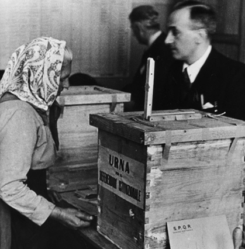

IL NOSTRO PROGETTO
QUANTO È IGNORATO IL DIRITTO AL VOTO IN ITALIA?
Il nostro progetto è partito da una riflessione dopo l’esperienza comune del voto all’ultimo referendum del 8-9 giungo 2025: quante persone non hanno partecipato al voto per scelta? Abbiamo scelto di soffermare la nostra ricerca sui referendum che consideriamo la forma più evidente di espressione della democrazia, mettendo in evidenza il crescente astensionismo che affligge la nostra nazione.
